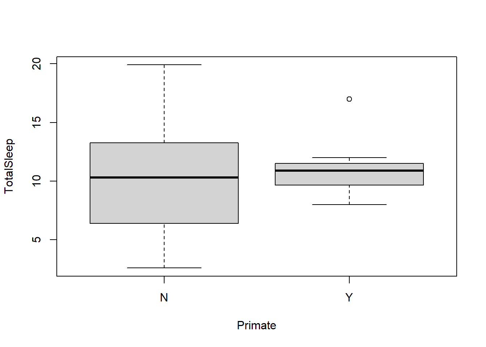
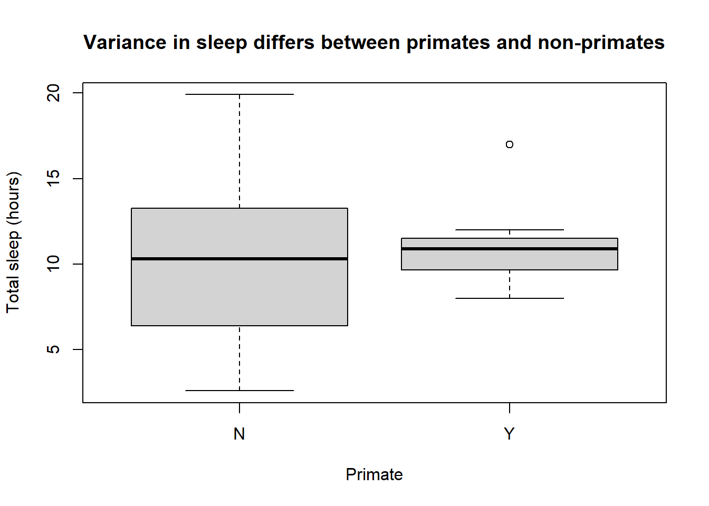
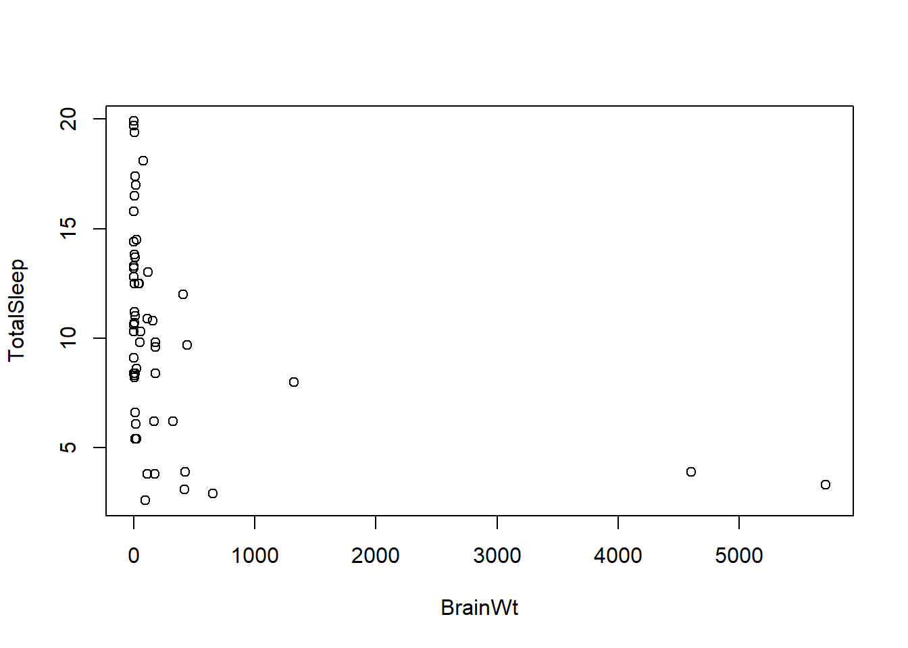
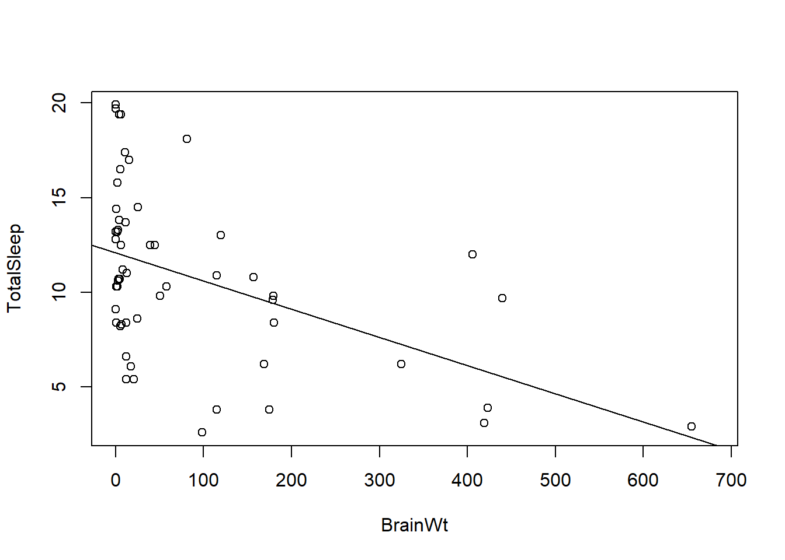

print("this is a chunk")[1] "this is a chunk"The focus of this overview is to get you used to tools we will be using in class. Before completing it you should have a basic understanding of using R. We will do an introduction in class (download help file). You should also be comfortable using Rstudio and github (see help file).
qmd files differ from R files in that they combine regular text with code chunks. This is a code chunk
print("this is a chunk")[1] "this is a chunk"Code chunks combine code with output. When combined with regular text/prose, this makes it easier to produce a range of documents. You set the output in the YAML header (the stuff between the 3 dashes you see at top of this document).
After you write the file, you Render it to turn the qmd file into the selected output. Try it now. Note the first time you do this in a project you may be prompted to install a number of packages! If you are using a webservice you may also need to allow pop-ups in your browser. Don’t be surprised if a new window pops up (it should).
Note: qmd is a newer form of rmd. Rmd files used to be knit. Once qmd files were established, both those and Rmd files were rendered. Some files in the book are still rmd but are being transitioned over time. This has little impact on the user.

The Render button saves the .qmd file and renders a new version whose output depends on what you selected in the header. Here we have html_document, so if everything works a preview of a webpage like document should appear. The file also produces a github friendly .md file. This means you should only edit the qmd file! Everything else is automatically produced and any changes you make will be overwritten by your next render.
When you Render a file, it runs in a totally new R instance. this means anything you only added in your instance (like working in the console) won’t be available. In other words, its the best way to see what a “new” user gets when they use your code.
However, you can also work with the file interactively. To do this, press the green button next to an R chunk.

print("this is a chunk")[1] "this is a chunk"Now we’ll start changing the file to show you how rmarkdown works. First, amend the file by replacing the NAME and DATE spots in the header (top of the file between the — markers) with your name and the real date. Then Knit the file again. You should see your name in the new preview.
Rstudio has a Markdown Quick Reference guide (look under the help tab), but some general notes.
You can also switch to visual mode to more easily work with formatting.

The main idea is qmd files allow you to combine code, text, graphs, etc into multiple outputs that you can share (including with coding illiterate colleagues who just want output).
To practice working with qmd files and R, work through the questions below. You can also get more help with this video
Let x be defined by
x <- 5:15Try executing this chunk (in R studio, not the webview) by clicking the Run button within the chunk or by placing your cursor inside it and pressing Ctrl+Shift+Enter.
This will run the code in the Console. You may need to switch to Console (from Rmarkdown) in the lower right window area to see this. The executed code is also displayed in your processed file (hit Knit again to see this!).
Note running this chunk has added an object named x to the Environment tab area (top right area of screen). But nothing was “returned” in the console. You prove this by typing x in the console. What does it return?
Determine what the “:” does! Complete the following sentence:
x <- 5:15The : means “create a sequence counting by 1’s from a to b (in a:b)”.
Now try to guess the output of these commands
INSERT AN R CHUNK HERE AND RUN EACH OF THESE COMMANDS. Add a new chunk by clicking the Insert Chunk button on the toolbar or by pressing Ctrl+Alt+I. Then state what each of these does.
length(x)[1] 11max(x)[1] 15x[x < 5]integer(0)x^2 [1] 25 36 49 64 81 100 121 144 169 196 225x[ x < 8 & x > 2][1] 5 6 7Length of x returns the number of elements in a vector. max returns the highest value. square brackets allows you to return (or work with) only portions of a vector. ^2 squares a value.
Is -1:2 the same as (-1):2 or -(1:2)? INSERT AN R CHUNK HERE AND RUN EACH OF THESE COMMANDS. Then state what each of these does.
-1:2[1] -1 0 1 2(-1):2[1] -1 0 1 2-(1:2)[1] -1 -2The first creates a sequence from -1 to 2 by ones (see question 1). The second does the same. The third creates a sequence from 1 to 2 then applies a negative to it.
You can read in a dataset from the internet following this protocol.
sleep <- read.csv("http://raw.githubusercontent.com/jsgosnell/CUNY-BioStats/master/datasets/sleep.csv", stringsAsFactors = T)Run this chunk and note it has added an object named sleep to the environment.
Make sure you see the object in the environment tab!
Info on the dataset is viewable @ http://www.statsci.org/data/general/sleep.html.
How many rows does the sleep data set have (hint: ?dim)? What kind of data is stored in each variable?
ENTER ANSWERS HERE. ADD ANY R CHUNKS YOU USED TO FIND THE ANSWER.
dim(sleep)[1] 62 12dim returns the number of rows and columns (IN THAT ORDER) in a dataframe! So sleep has 62 rows. NOTE: If you look at the .Rmd code here, you can see how to put R output inline (instead of in chunks).
str(sleep)'data.frame': 62 obs. of 12 variables:
$ Species : Factor w/ 62 levels "Africanelephant",..: 1 2 3 4 5 6 7 8 9 10 ...
$ BodyWt : num 6654 1 3.38 0.92 2547 ...
$ BrainWt : num 5712 6.6 44.5 5.7 4603 ...
$ NonDreaming: num NA 6.3 NA NA 2.1 9.1 15.8 5.2 10.9 8.3 ...
$ Dreaming : num NA 2 NA NA 1.8 0.7 3.9 1 3.6 1.4 ...
$ TotalSleep : num 3.3 8.3 12.5 16.5 3.9 9.8 19.7 6.2 14.5 9.7 ...
$ LifeSpan : num 38.6 4.5 14 NA 69 27 19 30.4 28 50 ...
$ Gestation : num 645 42 60 25 624 180 35 392 63 230 ...
$ Predation : int 3 3 1 5 3 4 1 4 1 1 ...
$ Exposure : int 5 1 1 2 5 4 1 5 2 1 ...
$ Danger : int 3 3 1 3 4 4 1 4 1 1 ...
$ Primate : Factor w/ 2 levels "N","Y": 1 1 1 1 1 1 1 1 1 2 ...the str function returns the size of the dataset and the class of each column. Note how we use the the $ notation to select columns.
Change the column named BodyWt to Body_weight”* in the sleep dataset.
ADD ANY R CHUNKS YOU USED TO COMPLETE THE TASK.
names(sleep)[names(sleep) %in% "BodyWt"] <- "Body_weight"Produce a plot of how TotalSleep differs between primates and other species. What is this plot showing?
Note, as of early 2020 R no longer reads in strings as factors! This means the Primate column, which is full of “Yes”s and “No”s, reads in as words and R doesn’t know how to plot them. There are many ways to handle this. You can modify the read.csv command (add stringsAsFactors = T option), eg*
sleep <- read.csv("http://raw.githubusercontent.com/jsgosnell/CUNY-BioStats/master/datasets/sleep.csv", stringsAsFactors = T)If you do this, you’ll need to rechange anything you previously updated to the object (like renaming the BodyWt column).
You can also modify a single column for the actual object
sleep$Primate <- factor (sleep$Primate)or for a single command, eg (plot not actually shown!)
plot(BodyWt ~ factor(Primate), data = sleep)NOTE YOU CAN ADD A PLOT TO THE DOCUMENT TOO! AMEND THE BELOW AS NEEDED.
plot(cars)
Answer is
plot(TotalSleep ~ Primate, sleep)
or to clean it up (we’ll introduce ggplot2 in a few sessions to help with this)
plot(TotalSleep ~ factor(Primate), sleep, main = "Variance in sleep differs between primates and non-primates",
xlab = "Primate", ylab = "Total sleep (hours)")
The sleep dataset begs to have a linear model fit for it. Let’s consider. First plot how TotalSleep is explained by BrainWt. Are there any issues with the data? Exclude any outlier and fit a linear model to obtain the p-value for the model (hint: summary()). What does this imply?
ENTER ANSWERS HERE. ADD ANY R CHUNKS YOU USED TO FIND THE ANSWER.
First look for outliers (before fitting a model)
plot(TotalSleep ~ BrainWt, sleep)
We have few measurements where BrainWt >1000, so let’s exclude those for the model
sleep_fit <- lm(TotalSleep ~ BrainWt, sleep[sleep$BrainWt<1000,])
summary(sleep_fit)
Call:
lm(formula = TotalSleep ~ BrainWt, data = sleep[sleep$BrainWt <
1000, ])
Residuals:
Min 1Q Median 3Q Max
-8.0342 -2.8719 0.1718 2.0426 7.8037
Coefficients:
Estimate Std. Error t value Pr(>|t|)
(Intercept) 12.099991 0.632611 19.127 < 2e-16 ***
BrainWt -0.014926 0.003833 -3.894 0.000278 ***
---
Signif. codes: 0 '***' 0.001 '**' 0.01 '*' 0.05 '.' 0.1 ' ' 1
Residual standard error: 4.021 on 53 degrees of freedom
(4 observations deleted due to missingness)
Multiple R-squared: 0.2224, Adjusted R-squared: 0.2078
F-statistic: 15.16 on 1 and 53 DF, p-value: 0.0002782We see a significant (p <.05, don’t worry, we’ll see this later) relationship between BrainWt and TotalSleep, and it appears that TotalSleep decreases as BrainWt increases (note the negative estimate). We can visualize this using
plot(TotalSleep ~ BrainWt, data = sleep[sleep$BrainWt < 1000, ])
abline(sleep_fit)
not required
 Dow Puffin Matthew Zalewski / CC BY (https://creativecommons.org/licenses/by/3.0)
Dow Puffin Matthew Zalewski / CC BY (https://creativecommons.org/licenses/by/3.0)
Sometimes data doesn’t have headers (column names),so you have to add them. Download a dataset on alcids (birds like puffins and auklets) from https://raw.githubusercontent.com/jsgosnell/CUNY-BioStats/master/datasets/alcids55.csv.
You’ll need to modify the read.csv function by specifying header = False, then use the names function to name the columns [“year”, “a1_abund”, “NAO”, “a2_abund”, “a3_abund”, “a4_abund”, “a5_abund”, “a6_abund”]. Try it and check your input using the head command.
ENTER ANSWERS HERE. ADD ANY R CHUNKS YOU USED TO FIND THE ANSWER.
alcids <- read.csv("https://raw.githubusercontent.com/jsgosnell/CUNY-BioStats/master/datasets/alcids55.csv",header = F, stringsAsFactors = T)
names(alcids) <- c("year", "a1_abund", "NAO", "a2_abund", "a3_abund", "a4_abund", "a5_abund", "a6_abund")
head(alcids) year a1_abund NAO a2_abund a3_abund a4_abund a5_abund a6_abund
1 1954 55 -2.52 100 1 0 8 0
2 1955 44 -1.73 100 1 0 10 0
3 1956 50 1.52 100 1 0 7 1
4 1957 100 -1.02 18000 2 50 8 0
5 1958 5 -0.37 1000 2 15 10 0
6 1959 400 -1.54 1500 3 190 6 3Here’s a sample dataset:
| Date | greenness | Richness | habitat |
|---|---|---|---|
| 12-25-2009 | 13766 | 46 | forest |
| 01-01-2010 | 50513 | 60 | forest |
| 01-15-2010 | 25084 | 60 | grassland |
Enter it into R (manually or via a .csv). (Hint: you have a piece of this in the code already). Check your input using the head() command.
ENTER ANSWERS HERE. ADD ANY R CHUNKS YOU USED TO FIND THE ANSWER.
I did this by putting the data in a spreadsheet, saving it as a .csv file, and uploading it. You can see an example spreadsheet at https://docs.google.com/spreadsheets/d/1nOpd6QkJRG8tdn1b-Mmx8AVdwUIFAzzLw3SlJGb_LWA/edit?usp=sharing. From there you can download the file OR publish it to the web as a .csv (look under File > Publish to web in the Google Sheets), and then read in the .csv file to R. Note I used stringAsFactors = T to have the habitat column read in as factors.
example_sheet <- read.csv("https://docs.google.com/spreadsheets/d/e/2PACX-1vRsRUBNxda2SEyfti8fAlGLbXjilR1SWYdmkOh1ZEIhadaqwkH6fP9aoWSPgIQEh0dd0isOxONTeAQc/pub?gid=0&single=true&output=csv",
stringsAsFactors = T)Warning in read.table(file = file, header = header, sep = sep, quote = quote, :
incomplete final line found by readTableHeader on
'https://docs.google.com/spreadsheets/d/e/2PACX-1vRsRUBNxda2SEyfti8fAlGLbXjilR1SWYdmkOh1ZEIhadaqwkH6fP9aoWSPgIQEh0dd0isOxONTeAQc/pub?gid=0&single=true&output=csv'# so you can see it
head(example_sheet) Date greenness Richness habitat
1 12-25-2009 13766 46 forest
2 01-01-2010 50513 60 forest
3 01-15-2010 25084 60 grassland